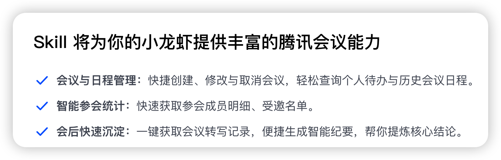
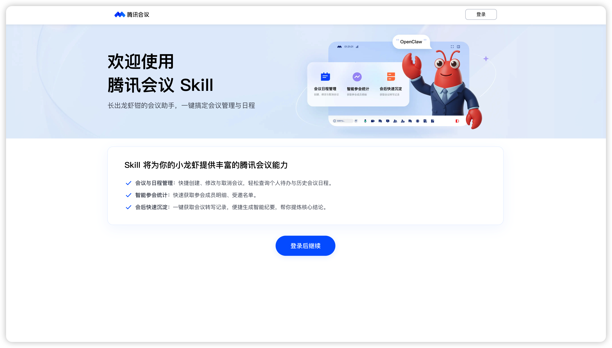
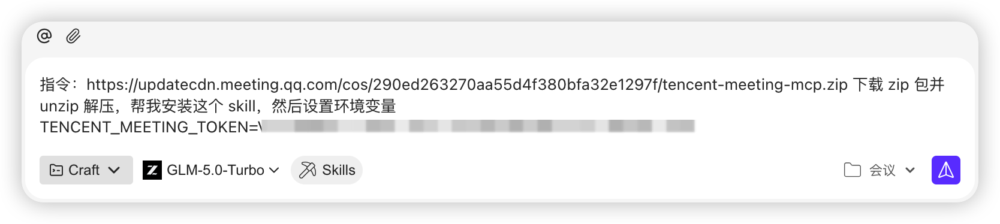
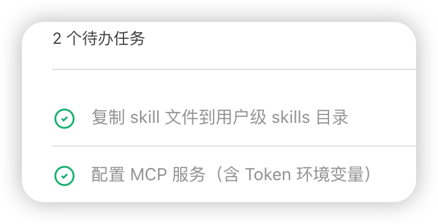
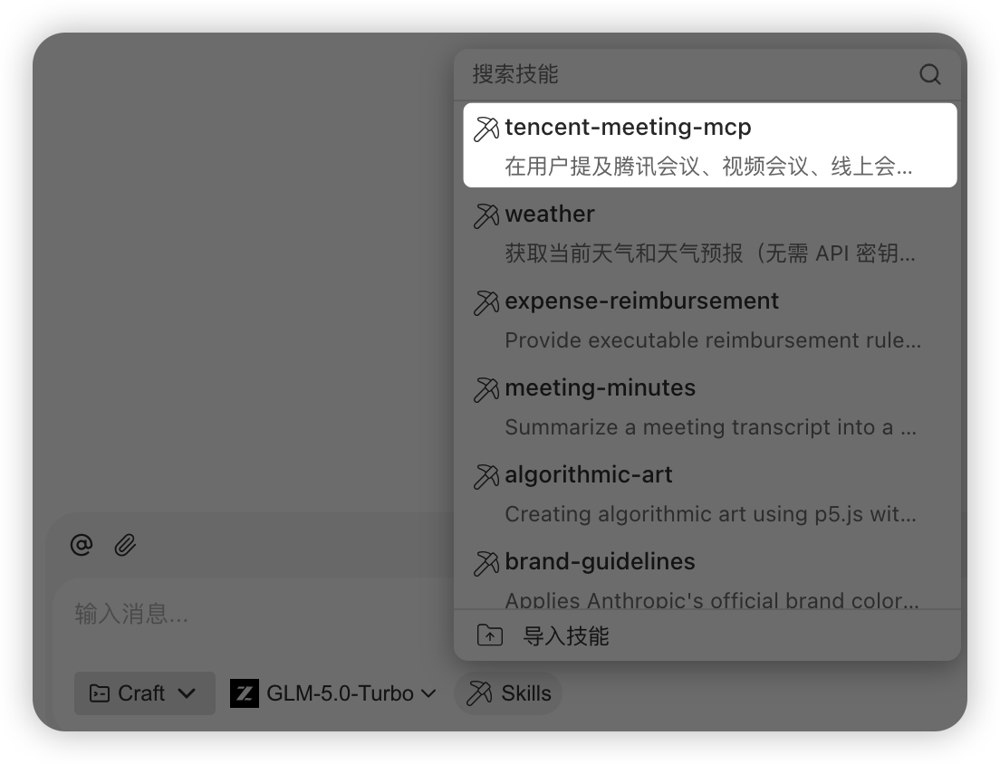
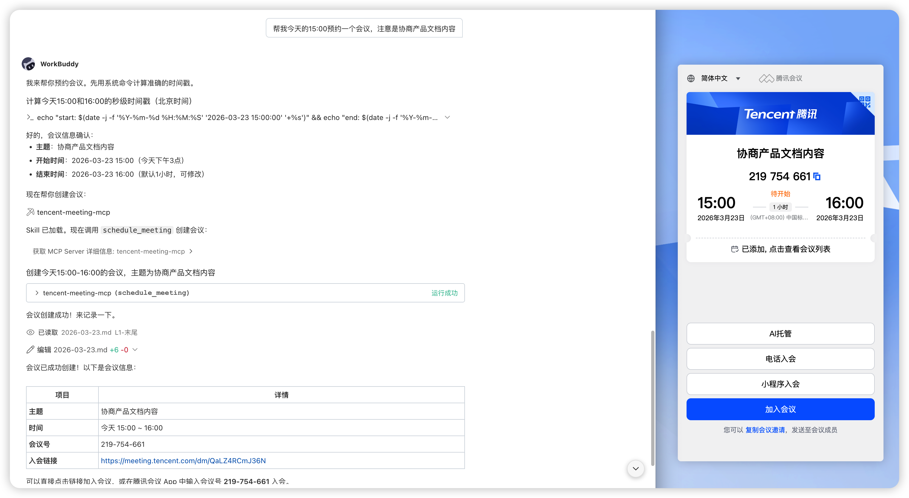
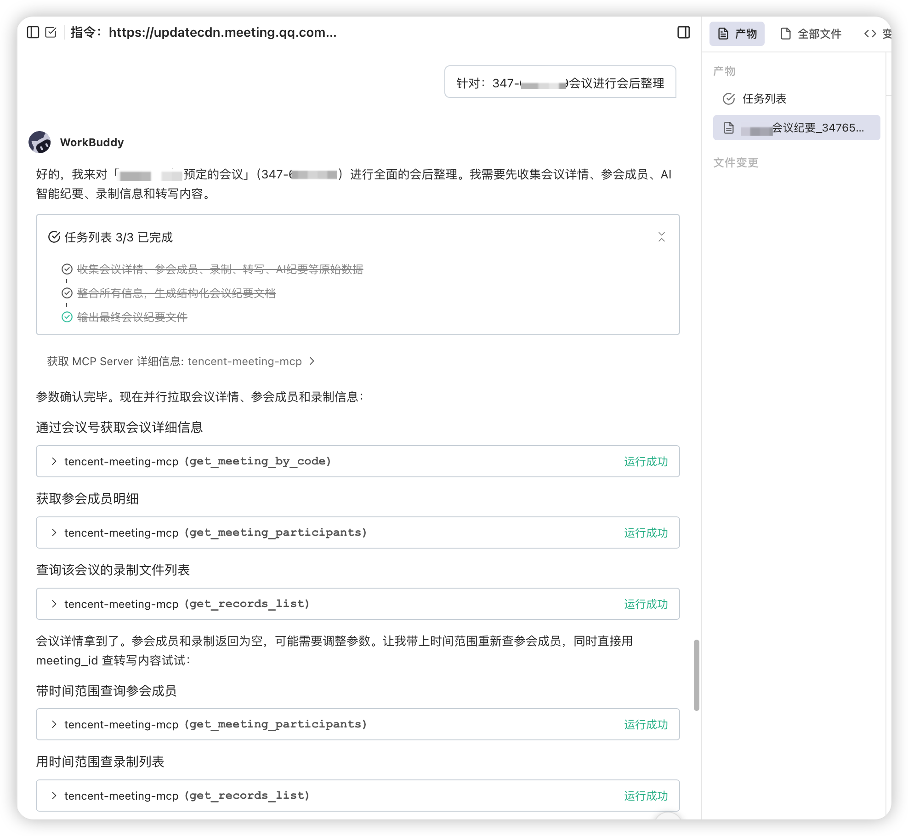

实践十：一句话，管理你的所有会议
一、文档说明
本文介绍如何在 WorkBuddy 中安装并使用腾讯会议 Skill，通过自然语言直接完成会议预约、修改、取消、查询，以及录制、转写和 AI 纪要整理等操作，适用于需要频繁开会、又不希望在多个应用之间来回切换的场景。
二、适用场景
- 正在编码、写文档或处理任务时，临时需要快速发起会议。
- 希望直接在
WorkBuddy中完成会议的预约、修改与取消。 - 需要查看参会成员、会议录制、转写内容与智能纪要。
- 希望减少在编辑器、会议软件与笔记工具之间的反复切换。
三、核心功能

四、获取并安装腾讯会议 Skill
1）获取个人 Token
首先打开腾讯会议 Skill 官方页面：快速跳转点我，并使用腾讯会议账号完成登录。
在授权页面中，可直接获取并复制个人专属 Token。

登录后，参考页面中的"WorkBuddy 原生接入流程"，按步骤完成授权与配置。
- 注意事项：
Token属于个人凭证，请妥善保管。 - 补充说明：如
Token失效，可重新访问授权页面获取新凭证。
2）在 WorkBuddy 中发起安装
完成上一步骤后，复制上图中第 1 步的命令，回到 WorkBuddy 对话窗口，直接粘贴安装指令，即可让 WorkBuddy 自动完成腾讯会议 Skill 的安装。
示例指令，如下图所示：

安装过程中，WorkBuddy 会自动创建任务，并完成下载、解析和配置等步骤。

安装完成后，可在已安装技能列表中看到腾讯会议 Skill。

3）安装完成后的效果
安装成功后，即可在 WorkBuddy 中通过自然语言管理腾讯会议相关流程，无需手动记忆复杂参数。
例如，你可以直接一句话创建会议、修改会议、查询会议安排，或在会后继续查看录制、转写和智能纪要。
a）示例 1
创建会议示例，如下图所示：

b）示例 2
针对会议进行会后总结，如下图所示：

可支持的方向通常包括：
- 创建普通会议与周期性会议。
- 修改会议主题、时间、密码等信息。
- 取消会议并查询会议详情。
- 查看参会成员、受邀成员与等候室信息。
- 获取会议录制、转写内容和
AI智能纪要。
五、常见使用场景
1）会议管理
可直接用自然语言完成预约、修改、取消和查询。
示例指令：
帮我创建一个腾讯会议，主题是技术方案讨论，今天下午
3点到4点。
安排一个周期性会议，每周一上午
10点，主题是团队周会。
把会议
450-743-140的时间改到下午4点。
取消会议号
450-743-140的会议。
查一下我今天有哪些会议。
2）成员管理
当需要确认谁参加了会议、谁被邀请或谁正在等候室时，也可以直接在对话中查询。
示例指令：
会议
450-743-140有哪些人参加了？
这个会议邀请了哪些人？
等候室里现在有谁？
3）录制、转写与智能纪要
会议结束后，可继续查询录制、查看转写，或直接获取 AI 生成的会议纪要。
示例指令：
帮我查一下最近的会议录制。
获取上次会议的录制下载链接。
帮我看看上次会议的转写内容。
在会议转写里搜索"技术方案"。
帮我获取这个会议的智能纪要。
六、推荐使用方式
- 先说清楚主题与时间：创建会议时尽量一次说明会议主题、时间范围与是否重复。
- 修改前先确认会议编号：如涉及改期、取消，建议明确提供会议号或会议名称。
- 会后直接接上纪要整理：会议结束后可继续让
WorkBuddy查询录制、查看转写并总结重点。 - 把查询写成自然语言：无需记忆命令格式，按日常表达方式描述即可。
七、使用建议
- 注意
Token时效：如安装或调用失败，可优先检查Token是否已过期。 - 时间可直接自然表达：例如"今天下午
3点到4点""明早9点半"，通常无需手动换算格式。 - 密码建议提前说明：若会议需要自定义密码，创建时可一并提出，常见密码规则为
4到6位数字。 - 会议号与周期规则要说清楚：查询、修改或取消时建议明确会议号；创建周期会议时建议说明是每天、工作日、每周、每两周还是每月。
- 重要操作先核对信息：涉及修改与取消时，建议先查看当前会议信息再执行。